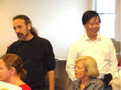

Roni and Albert - a special mention

Roni Linser and Albert Ip based in Melbourne Australia are inspired minds! They are the developers of the Fablusi web-based role-play generator. We chose the Fablusi software as our first role-play environment to explore and Roni and Albert facilitated two workshops with us on designing and moderating role-play and acted as our mentors.
They were also available as troubleshooters and technical advisers and they were much in demand! Luckily they were patient and generous with their time.
Roni has been designing and moderating simulations within the Department of Political Science at the University of Melbourne for several years. In fact, that’s how Roni and Albert got together.
They now have a new company which specializes in political science role-play simulations. They use Fablusi of course!
At that time, for the Political Science role-plays, Roni provided a face-to-face induction as well as a face-to-face debrief and most students were on campus during the course of the role-play. We were exploring role-play as part of flexible and off campus delivery and soon discovered this was rather ambitious.
While we are now exploring other role-play options, Fablusi got us started and it was Roni and Albert who with patience and endless support, helped us over major hurdles.
It was this experience that really instilled in us the value of working in teams. We shone in different ways. Some of us were good designers, others developed expertise in moderation while a third group came to grips with the technology. While a rare few could handle all three roles, we mostly relied on each other to focus on different aspects of getting a role-play up and running.
As we moved to the moderating stage we soon realized the critical role of debriefing. As Dr Sivasailam “Thiagi” Thiagarajan drummed into us – “The role-play is an excuse for the debrief”. Luckily for us, Thiagi was visiting Australia so we booked him in for a much appreciated workshop on “Debriefing Experiential Learning”.
igniting the spark for web-based roleplay | 2003